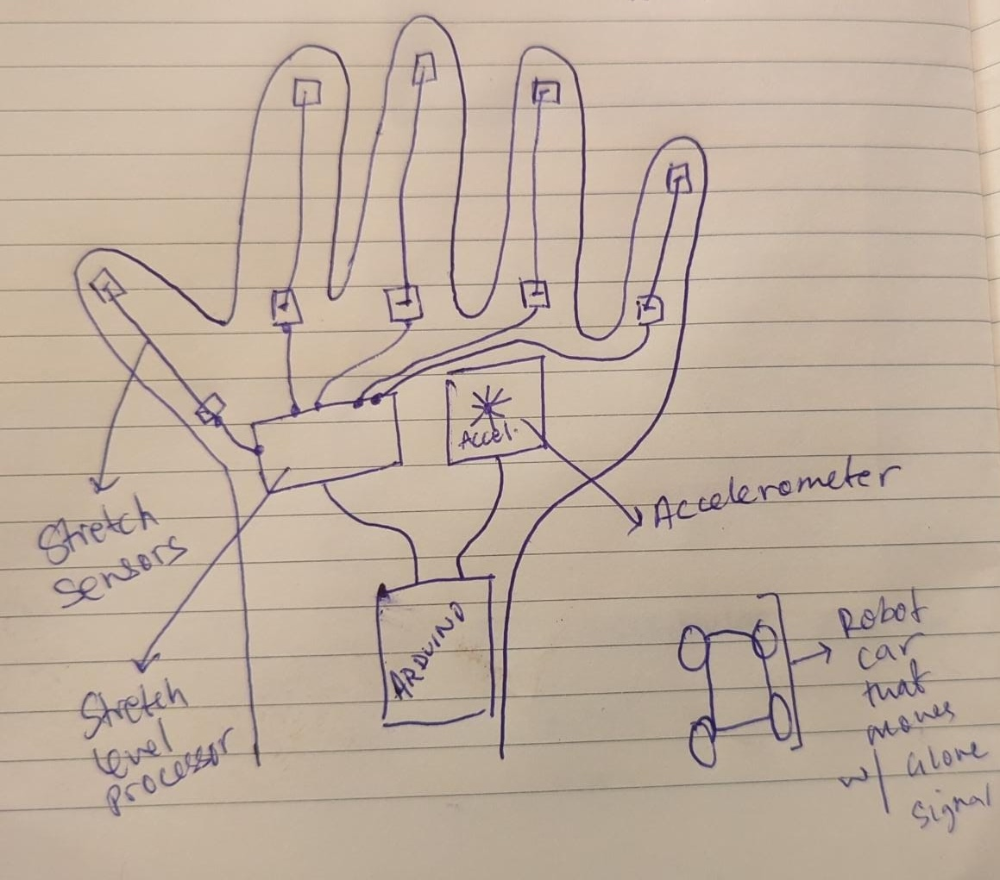
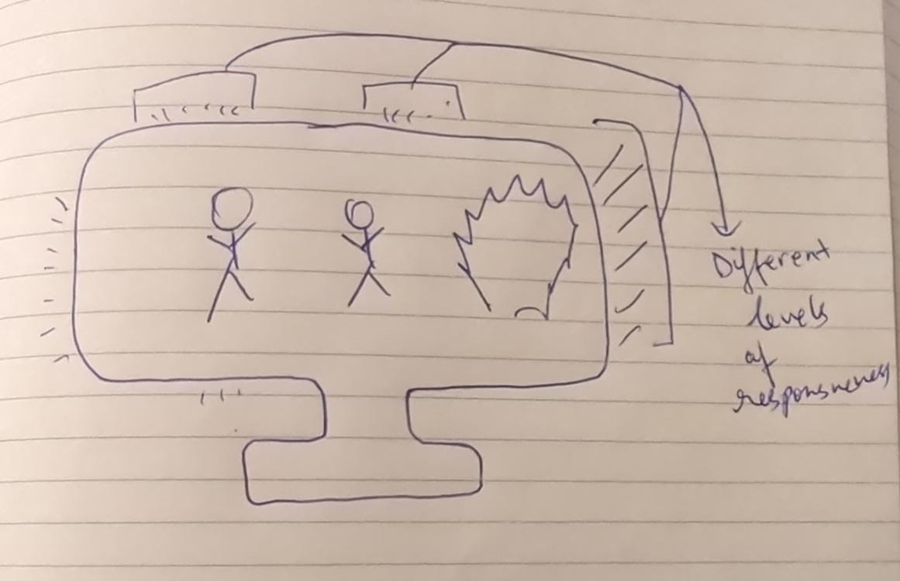
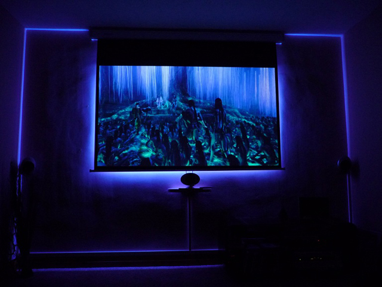

Website Creation
Bobby was extremely helpful in orienting us with GitHub and how to simulate our websites on it. We then used the template on the PS70 website to create a basic layout of our own website.
I was excited to start making a unique design for the website but I was not sure how. When I was discussing some potential design ideas with those sitting around me, one of my peers recommended a particular software that ended up becoming highly useful: Cursor AI
Although I have basic HTML and CSS knowledge, I was still a little unsure about how to tie it all together. Cursor came to my aid for this. I was able to ideate some of my thoughts and was able to get a good functioning website based by using some AI assistance to translate the more complex design ideas I had into actual code (eg. the glowing grid on the index.html page, the floating photo on the aboutme.html page, etc).
I was able to implement a minimalist-looking design with high contrast colors (black and white), and particularly wanted to implement elements such as the boxes for each week (on the index.html page), responsiveness to icons being hovered over, and an eye-catching electronic-looking grid system right at the top. These were some initial designs I wanted to put on the website, and I will probably put some more over the course of this semester as well (perhaps even a different cursor from before, similar to what someone from a previous term did).
Here's a screenshot of how I was able to use some of the prompts to create some cool features:

Idea 1: An Electric Skateboard

I walk a lot. Especially on campus here, it is inevitable that if you do not have a bike, you end up walking a few ten thousand steps a day. I wanted to see if there was a way to avoid this much walking (if you can't tell, I do not like walking at all). There are, of course, obvious options such as getting a bicycle, or a skateboard, or getting a scooter. But, all of these also require some form of effort to get around, and something like a normal skateboard may not be so forgiving on the rough salt-laden walkways during the wintertime. Me being the lazy person I am, wanted to find an alternative
I remember watching one of my favorite YouTubers, Casey Neistat, use something called a Boosted Board. It is essentially an electric longboard, with a wireless remote control, that could take him from one point to another in (almost) any condition and on any surface. I have always loved the idea of a Boosted Board, but was not able to ever buy one after seeing how much they cost. This is why one of my PS70 ideas was to make one myself. I would love to be able to create a cost-effective electric skateboard that could take me around campus with ease.
My basic ideation included breaking down this project into the most basic pieces it would need to work:
An actual board to attach components to
- This is probably the most simple thing in this project. This would require simple woodworking & wood cutting to create a large longboard/skateboard shape cut into a thick piece of wood (design below). It would likely be done using the laser cutting machine or potentially the CNC machine.

How the basic wood could be cut into for a skateboard/longboard shape
A form of remote control transmission and receiver
There were a few ways I could approach the remote control transmission:
- Use a regular RC-car remote control which has a trigger mechanism to accelerate or decelerate
- Create a 'glove' device that would sense if I've clenched my fist or not to accelerate or decelerate the board
- Bobby suggested that this idea could be awesome even on its own, so I've ideated further below
- The receiving component, in theory, should be pretty simple, as it can just be be a microcontroller unit on the board that receives a continuous numerical input from the remote control, and increases the voltage fed to the motors with an increase in input, and a decrease in voltage with a decrease in input (to speed up/slow down the board, respectively)
Motors & Trucks Interaction Mechanism
A Battery
- Along with the actual motors, a method to power them would also be required. This would need to be quite powerful (24V-48V, 5Ah-10Ah), making them quite big. This would mean either attaching them to the bottom of the skateboard, or towards the back of the skateboard. However, the required power specification of these batteries makes the cost quite high, adding an additional barrier.
A commonly recurring theme here is cost. The cost to simply acquire the raw materials is quite high. Although the anticipated cost may still be lower than that of buying an actual electric skateboard, it is still quite out of my budget. Unless I am able to find some form of cheap alternative to these issues, this idea might not come to fruition.
Idea 2: A wearable glove that can move an robot or object

A (crude) drawing of what I thought could be the glove system
This is an idea that fascinates me quite a lot. Originally, this was supposed to simply be part of the larger skateboard idea, where the glove would be an easy way to accelerate or decelerate the skateboard.
Essentially, I was considering some sort of mechanism that could detect tensile effects: when the fist would be clenched, there would be some sort of tensing/stretching of wires that could be detected, and when the fist would be relaxed, these wires would not be stretched. My initial idea included actual threads/ wires that would stretch and relax, but I felt that this might not be the best idea, as these threads may just snap or get inelastically deformed if stretched too much.
While discussing this idea with Bobby, however, he mentioned the possibility of using a Strain Gauge. This would modulate the current flowing through it by altering its resistance based on stretch (similar to a potentiometer). It could be possible to attach these to each individual finger and create an overall map of how much each finger and the whole hand is stretching or relaxed. The glove would also have a transmission module that would transmit this overall data of how much the hand is clenched into an output that could control the acceleration or deceleration of, for example, a robotic car.
An additionally cool addition to this glove device would be to use an accelerometer to detect the orientation and direction in which the hand is facing. This could be useful to steer a robotic car, making it even more functionally useful.
Idea 3:LED Monitor Backlight

Another (crude) drawing of what could be how the LED monitor backlight system could look like
I remember the pandemic-era trend of everyone getting LED-strip lights to decorate their rooms with. A few months after that had taken off, some random advertisements began showing up on my social media with people giving their living rooms an 'immersive theater' effect by lining these same LED strips on the back of their televisions and making them responsive to what is playing on the television. I feel this could be enough of a project to integrate inputs and outputs, and could also go deep into sensory modalities to actually detect color profiles from content playing on the screen. An interesting addition could also be having a remote control to alter light's intensity based on sound responsiveness, where certain sound effects could be more dramatic with brighter lights and colors if the user so chooses.
Upon thinking of required components, it is clear that I would need LED lights (of course), some form of audio intensity detection (essentially data from a microphone), some form of transmission and receiving from a remote control, and a light-sensing mechanism. There would need to be a way to detect the color profiles from all the parts of the content being played on the screen, and it would also need to avoid the obstruction of their view. I feel this light sensing mechanism could be approached in a few ways:
This way would bypass physical sensing mechanisms, and would instead rely more on a software method that could digitally process the content being played on the screen. This could be more accurate, however would require less physical fabrication and more software, so I am a little skeptical about using this method.

A more 'professional' image of what the LED monitor backlight system could look like